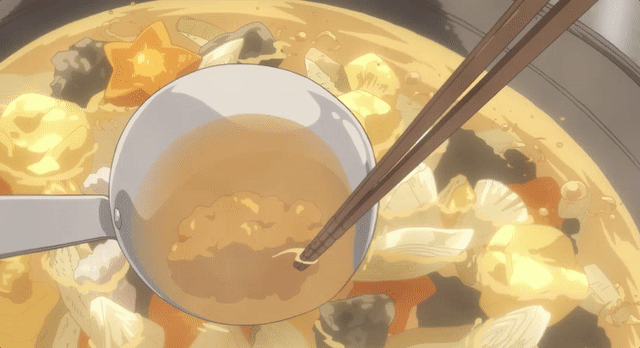

Miso Soup Recipe

Perfectly Balanced Miso Soup
Ahhh yes, miso soup: the start of a wonderful Japanese meal (unless you chose salad, which if you did that sucks because you're missing out on a warm bowl of delicious probiotics.) Coffee shops are judged based on their espresso shots, southern restaurants are judged based on their sweet tea, and as for Japanese restaurants, I'd argue that they're judged based on the quality of their miso soup. In this recipe, I'll show you how to make miso soup just like how they make it at your favorite sushi spot. You'll be surprised at how simple it is to make!
What you'll need:
- 4 cups of boiling water
- dashi stock
- soft tofu
- red miso paste
- 1 Tbsp dried wakame seaweed
- 1 green onion
Let's get started!
For the dashi stock
- Follow the instructions from the manufacterer to mix in the right amount of dashi powder to create 4 cups of dashi stock
- Mix 4 cups of boiling water with dashi stock until fully dissolved. Turn heat to low.
To make the miso soup
- Prep your green onions by cleaning and cutting into small pieces.
- Prep your tofu by cutting it into cubes.
- Add around 4-5 Tbsp of miso paste to your dashi stock. Make sure to use a small strainer to slowly incorporate it into the stock.Do not add all of it at once.
- After all of the miso is fully dissolved, cut the heat and add your cubed tofu, wakame, and green onion.
Taadaaaa!! Wasn't that easy? Hope you enjoyed this simple recipe!
